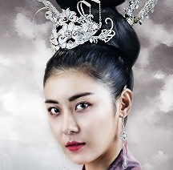

現在位置: 奇皇后
年份分類
劇情分類
我的收藏
首頁
浪漫
劇情
古裝
警匪
2016
2015
2014
2013
劇情簡介
奇皇后
奇承娘從被高麗進獻給元朝的貢女，成為皇宮中的元朝奉茶宮女，卻因緣巧合下得到元朝皇帝的愛慕，最後登上元朝皇后之位。
人物介紹

戲劇列表
奇皇后
第1集 Part 1
第1集 Part 2
第2集 Part 1
第2集 Part 2
第3集 Part 1
第3集 Part 2
第4集 Part 1
第4集 Part 2
第5集 Part 1
第5集 Part 2
第6集 Part 1
第6集 Part 2
第7集 Part 1
第7集 Part 2
第8集 Part 1
第8集 Part 2
第9集 Part 1
第9集 Part 2
第10集 Part 1
第10集 Part 2
第11集 Part 1
第11集 Part 2
第12集 Part 1
第12集 Part 2
第13集 Part 1
第13集 Part 2
第14集 Part 1
第14集 Part 2
第15集 Part 1
第15集 Part 2
第16集 Part 1
第16集 Part 2
第17集 Part 1
第17集 Part 2
第18集 Part 1
第18集 Part 2
第19集 Part 1
第19集 Part 2
第20集 Part 1
第20集 Part 2
第21集 Part 1
第21集 Part 2
第22集 Part 1
第22集 Part 2
第23集 Part 1
第23集 Part 2
第24集 Part 1
第24集 Part 2
第25集 Part 1
第25集 Part 2
第26集 Part 1
第26集 Part 2
第27集 Part 1
第27集 Part 2
第28集 Part 1
第28集 Part 2
第29集 Part 1
第29集 Part 2
第30集 Part 1
第30集 Part 2
第31集 Part 1
第31集 Part 2
第32集 Part 1
第32集 Part 2
第33集 Part 1
第33集 Part 2
第34集 Part 1
第34集 Part 2
第35集 Part 1
第35集 Part 2
第36集 Part 1
第36集 Part 2
第37集 Part 1
第37集 Part 2
第38集 Part 1
第38集 Part 2
第39集 Part 1
第39集 Part 2
第40集 Part 1
第40集 Part 2
第41集 Part 1
第41集 Part 2
第42集 Part 1
第42集 Part 2
第43集 Part 1
第43集 Part 2
第44集 Part 1
第44集 Part 2
第45集 Part 1
第45集 Part 2
第46集 Part 1
第46集 Part 2
第47集 Part 1
第47集 Part 2
第48集 Part 1
第48集 Part 2
第49集 Part 1
第49集 Part 2
第50集 Part 1
第50集 Part 2
第51集 Part 1
第51集 Part 2
OST
1. 荊棘的愛 (4MEN)
2.愛情風 (Wax)